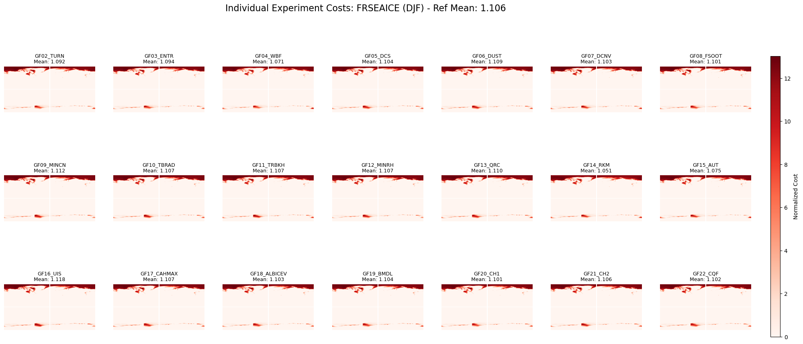

GEOS-MIT Green's Function Optimization
Diagnostic and Verification Plot Gallery
Select Figure:
Global_Cost_Breakdown_Experiments.png
Global_Cost_Breakdown_Experiments_GFO.png
Global_Cost_Breakdown_Variables.png
Global_Cost_Breakdown_Variables_GFO.png
Warming_Pattern_Map.png
GEOS_TS_GlobalMean_TimeSeries.png
Global_SST_Comparison.png
Global_SST_Step1.png
Global_SST_Step2.png
Global_SST_Step3.png
Global_SST_Step4.png
Global_TS_Comparison.png
Global_TS_Step1.png
Global_TS_Step2.png
Global_TS_Step3.png
Global_TS_Step4.png
Nino34_Comparison.png
Nino34_Step1.png
Nino34_Step2.png
Nino34_Step3.png
Nino34_Step4.png
SST_OceanOnly_Comparison.png
TS_Compare_GF01_GFOPT.png
TS_Compare_with_MERRA2.png
Map_Comparison_CLDHI.png
Map_Comparison_CLDLO.png
Map_Comparison_CLDMD.png
Map_Comparison_FRSEAICE.png
Map_Comparison_LHFX.png
Map_Comparison_PRECTOT.png
Map_Comparison_SWGNET.png
Map_Comparison_TS.png
Map_Diff_FRSEAICE.png
Map_Diff_PRECTOT.png
Map_Diff_SWGNET.png
Map_Diff_TS.png
FRSEAICE_DJF_AllExps_Cost.png
FRSEAICE_DJF_CostComparison.png
FRSEAICE_DJF_CostComparison_GFO.png
FRSEAICE_DJF_MeanFields.png
FRSEAICE_DJF_MeanFields_GFO.png
FRSEAICE_JJA_AllExps_Cost.png
FRSEAICE_JJA_CostComparison.png
FRSEAICE_JJA_CostComparison_GFO.png
FRSEAICE_JJA_MeanFields.png
FRSEAICE_JJA_MeanFields_GFO.png
H500_DJF_AllExps_Cost.png
H500_DJF_CostComparison.png
H500_DJF_CostComparison_GFO.png
H500_DJF_MeanFields.png
H500_DJF_MeanFields_GFO.png
H500_JJA_AllExps_Cost.png
H500_JJA_CostComparison.png
H500_JJA_CostComparison_GFO.png
H500_JJA_MeanFields.png
H500_JJA_MeanFields_GFO.png
LWGNET_DJF_AllExps_Cost.png
LWGNET_DJF_CostComparison.png
LWGNET_DJF_CostComparison_GFO.png
LWGNET_DJF_MeanFields.png
LWGNET_DJF_MeanFields_GFO.png
LWGNET_JJA_AllExps_Cost.png
LWGNET_JJA_CostComparison.png
LWGNET_JJA_CostComparison_GFO.png
LWGNET_JJA_MeanFields.png
LWGNET_JJA_MeanFields_GFO.png
SWGNET_DJF_AllExps_Cost.png
SWGNET_DJF_CostComparison.png
SWGNET_DJF_CostComparison_GFO.png
SWGNET_DJF_MeanFields.png
SWGNET_DJF_MeanFields_GFO.png
SWGNET_JJA_AllExps_Cost.png
SWGNET_JJA_CostComparison.png
SWGNET_JJA_CostComparison_GFO.png
SWGNET_JJA_MeanFields.png
SWGNET_JJA_MeanFields_GFO.png
T2M_DJF_AllExps_Cost.png
T2M_DJF_CostComparison.png
T2M_DJF_CostComparison_GFO.png
T2M_DJF_MeanFields.png
T2M_DJF_MeanFields_GFO.png
T2M_JJA_AllExps_Cost.png
T2M_JJA_CostComparison.png
T2M_JJA_CostComparison_GFO.png
T2M_JJA_MeanFields.png
T2M_JJA_MeanFields_GFO.png
T300_DJF_AllExps_Cost.png
T300_DJF_CostComparison.png
T300_DJF_CostComparison_GFO.png
T300_DJF_MeanFields.png
T300_DJF_MeanFields_GFO.png
T300_JJA_AllExps_Cost.png
T300_JJA_CostComparison.png
T300_JJA_CostComparison_GFO.png
T300_JJA_MeanFields.png
T300_JJA_MeanFields_GFO.png
TS_DJF_AllExps_Cost.png
TS_DJF_CostComparison.png
TS_DJF_CostComparison_GFO.png
TS_DJF_MeanFields.png
TS_DJF_MeanFields_GFO.png
TS_JJA_AllExps_Cost.png
TS_JJA_CostComparison.png
TS_JJA_CostComparison_GFO.png
TS_JJA_MeanFields.png
TS_JJA_MeanFields_GFO.png
U200_DJF_AllExps_Cost.png
U200_DJF_CostComparison.png
U200_DJF_CostComparison_GFO.png
U200_DJF_MeanFields.png
U200_DJF_MeanFields_GFO.png
U200_JJA_AllExps_Cost.png
U200_JJA_CostComparison.png
U200_JJA_CostComparison_GFO.png
U200_JJA_MeanFields.png
U200_JJA_MeanFields_GFO.png
SALT_0m_DJF_AllExps_Cost.png
SALT_0m_DJF_CostComparison.png
SALT_0m_DJF_CostComparison_GFO.png
SALT_0m_DJF_MeanFields.png
SALT_0m_DJF_MeanFields_GFO.png
SALT_0m_JJA_AllExps_Cost.png
SALT_0m_JJA_CostComparison.png
SALT_0m_JJA_CostComparison_GFO.png
SALT_0m_JJA_MeanFields.png
SALT_0m_JJA_MeanFields_GFO.png
SALT_300m_DJF_AllExps_Cost.png
SALT_300m_DJF_CostComparison.png
SALT_300m_DJF_CostComparison_GFO.png
SALT_300m_DJF_MeanFields.png
SALT_300m_DJF_MeanFields_GFO.png
SALT_300m_JJA_AllExps_Cost.png
SALT_300m_JJA_CostComparison.png
SALT_300m_JJA_CostComparison_GFO.png
SALT_300m_JJA_MeanFields.png
SALT_300m_JJA_MeanFields_GFO.png
THETA_0m_DJF_AllExps_Cost.png
THETA_0m_DJF_CostComparison.png
THETA_0m_DJF_CostComparison_GFO.png
THETA_0m_DJF_MeanFields.png
THETA_0m_DJF_MeanFields_GFO.png
THETA_0m_JJA_AllExps_Cost.png
THETA_0m_JJA_CostComparison.png
THETA_0m_JJA_CostComparison_GFO.png
THETA_0m_JJA_MeanFields.png
THETA_0m_JJA_MeanFields_GFO.png
THETA_300m_DJF_AllExps_Cost.png
THETA_300m_DJF_CostComparison.png
THETA_300m_DJF_CostComparison_GFO.png
THETA_300m_DJF_MeanFields.png
THETA_300m_DJF_MeanFields_GFO.png
THETA_300m_JJA_AllExps_Cost.png
THETA_300m_JJA_CostComparison.png
THETA_300m_JJA_CostComparison_GFO.png
THETA_300m_JJA_MeanFields.png
THETA_300m_JJA_MeanFields_GFO.png
